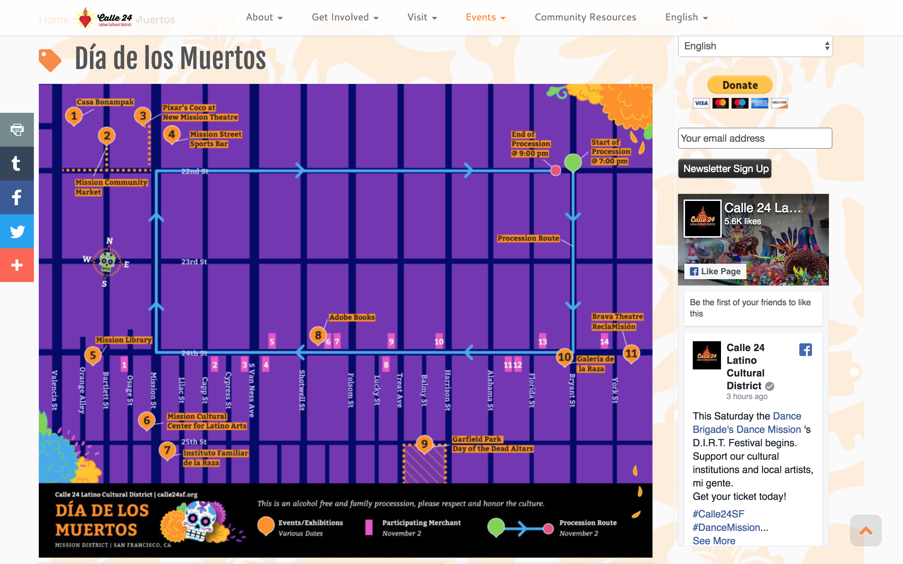

Carnaval San Francisco cultivates and celebrates the diverse Latin American, Caribbean and African Diasporic roots of the Mission District and the San Francisco Bay Area. We accomplish our mission through dance, music, the visual arts and by creating spaces for community learning, school–based education, and advocacy.
CARNAVAL SAN FRANCISCO'S 45TH ANNIVERSARY
For the 45th Anniversary of Carnaval SF, the theme was celebrating 45 Years of Music and Movement. Born in 1978 in the Mission District, Carnval SF was created by artists who believed Latin, Caribbean, and Afro-Diasporic music could unite people of all backgrounds, and it has since hosted world-class performers while remaining free and open to all. Its 45th anniversary honors the multicultural legacy of these artists by celebrating their timeless music, symbolized through classic 45 vinyl records.

Map showcased online in Calle 24's website
×